Florence Mary Gardiner, Evolution of Fashion. Davis, ed. from the 1897 edition. [eng]. Cited by chapter/paragraph.
Passages vi.1-vi.31
urn:cts:fuTexts:gardiner.eof.davis:vi.1-vi.31
vi.1CHAPTER VI.
vi.2MOURNING.
vi.3"The air is full of farewells to the dying And mourning for the dead."--_Longfellow._
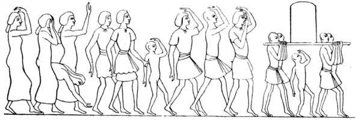
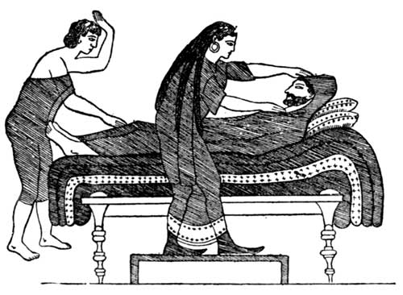
vi.6The signs of mourning in ancient times were by no means confined to the apparel. Fasting, laceration of the flesh, throwing dust on the head, and shaving the hair, were outward and visible signs of grief, accompanied by piercing cries of the most heartrending description. It was also customary to abstain from ornaments, to rend the clothing, and to put on filthy garments of sackcloth. This fabric was, and is still in the East, made of hair, which has an irritating effect upon the skin, and was for this purpose adopted as a penitential dress by the early Roman Church. The covering of the head was another manifestation of sorrow--a practice indicated by the hoods worn by female mourners, and the flowing hat-bands for men, so common at funerals a few years ago. In "A History of Mourning," by Richard Davey, from which many interesting facts on this subject may be gathered, we learn that the Egyptians, over three thousand years ago, selected yellow as the colour for mourning garments. The Greeks chose black as the most appropriate--a fashion followed by the Romans. The women of Rome had robes of black cloth, with veils of the same shade; but by a wise dispensation, young children were not compelled to adopt the symbols of woe. A year was the usual period for mourning a husband, wife, father, mother, sister, or brother; but relations who had been outlawed, imprisoned, or bankrupt, were not accorded this mark of respect. Numa published certain laws for the guidance of mourners, including one forbidding women to scratch their faces, or to make an exceptional display of grief at funerals. The Emperor Justinian (A.D. 537) also turned his attention to this subject, and regulated the expenses at funeral ceremonies, so as to secure those who remained from the double calamity of losing their friends and, at the same time, incurring heavy pecuniary liabilities on their account. Provision was made for burying each person free of cost, and for protecting the survivors from various extortions. Funds were appropriated for the purpose of interments, which were conducted by those appointed for the purpose. All persons were to be buried in the same manner; though those who desired to do so could, at their own cost, indulge in certain display, but this additional expense was limited. On state occasions, as, for example, on the death of an Emperor or a great defeat, the whole nation assumed the mourning garb. The defeat of CannAe, the conspiracy of Catalina, and the death of Julius CAesar, were all considered of sufficient importance for the observance of this custom. Private mourning could be broken among the Romans by certain domestic events, as the birth of a son or daughter, the marriage of a child, or the return of a prisoner taken in war. Both sexes were expected to abstain from going to public ceremonies and places of amusement; and women were not allowed to marry till a year had elapsed from the husband's death, without the special permission of the Emperor. History, however, does not record that their lords and masters applied this rule to their own conduct.
vi.8The Greeks buried their dead before sunrise, so as to avoid ostentation. Mourning women took part in the procession, and accompanied the chief female mourner in her visits to the grave, on the seven days following interment. This custom, which was derived from the East, was a usual feature in Jewish, Roman, and Egyptian, as well as in Greek funerals.
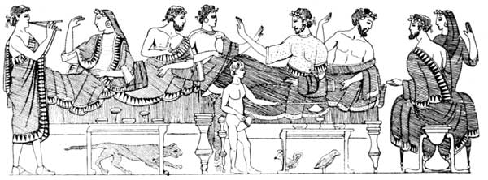
vi.10The funeral feast was a common practice among the classical ancients, and was kept up to a comparatively recent period, in various European countries. The Cup of Consolation consisted of light refreshments prepared and sent in by the friends of mourners, who were not supposed to busy themselves with domestic affairs at such a time. The illustration gives a good idea of the mourning habit adopted by the immediate family of the deceased. Caves were used for the disposal of the dead, as well as elaborately constructed sepulchres, of which many remain to this day. Earth burial was in favour with some nations, but in time of war or pestilence cremation was resorted to. The practice of embalming we owe to the Egyptians, who carried it to a great state of perfection. One of the earliest embalmments on record is that of Joseph, whose body accompanied the Israelites on their journey through the Wilderness. He was placed in a coffin, a distinction in the East only accorded to those of the highest rank, the usual mode being to simply swathe the corpse closely in wrappers and bandages, thus retaining the shape of the human form. The Jews largely used spices and perfumes, which were employed both for anointing and for wrapping up the body--a very necessary precaution in hot climates. The Egyptians, on the death of a relative or sacred animal (the cat, for instance), attired themselves in yellow garments and shaved off their eyebrows. Their funeral processions were magnificent. When a king quitted this mortal sphere, the temples were closed for seventy-two days, and there were no sacrifices, solemnities, or feasts. Companies of two or three hundred men and women, in mean attire paraded the streets, singing plaintive songs and reciting the virtues of him they had lost. They ate no meat, or food dressed by fire, and omitted their customary baths and anointings. Every one mourned as for the death of a favourite child, and spent the day in lamentations. The Pyramids, those wonderful monuments to Egyptian monarchs, are memorials of the reverence and industry of the nation, whose high state of civilization is attested to by their works.
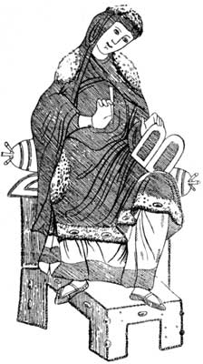
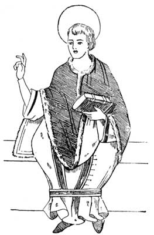
vi.13Burial clubs were common among the Anglo-Saxons, and heavy fines were inflicted on those who did not attend the funeral of a member. The corpse was placed on a bier, and on the body was laid the book of the Gospels, a code of belief and a cross as a symbol of hope. A silken or linen pall was used, according to the rank of the dead person. The clergy bore lighted tapers and chanted the psalter, the mass was performed, and a liberal offering made to the poor.
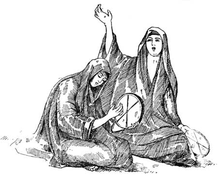
vi.15From a 9th century MS. in the National Library, Paris, is given a sketch which clearly defines the mourning habit of that period. The gown is evidently of black woollen cloth, trimmed with black and white fur; and a gauze veil of the same sombre tint envelops the head. From the same source a drawing of an Anglo-Saxon priest is given, on account of his wearing a black dalmatic, edged with fur, a vestment only adopted when a requiem mass was performed.
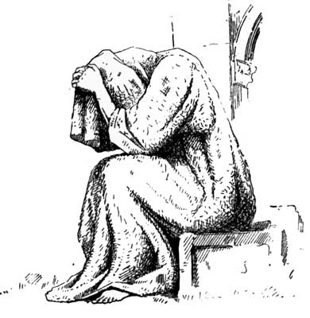
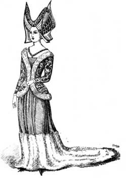
vi.18In the Middle Ages black was used for mourning as a rule, though purple and brown were occasionally substituted. Chaucer, in "The Knight's Tale," speaks of "clothes _black_ all dropped with tears," and, again, of "widdowes habit of samite _brown_." In many cases, on the death of her husband, the wife retired for a year to a convent, when she assumed the nun's dress, of which the widow's weeds of the present day are a symbol. The mourning adopted by Katherine of Valois, wife of Henry V., the hero of Agincourt, who died at Vincennes in 1422, may be regarded as the typical widow's dress of that period. It consisted of a black brocade cote hardi, edged with white fur, and further embellished with black glass beads, which were also used for ornamenting the winged head dress. Her black woollen gown has a deep bordering of white fur. Some mourning habits of this period are represented in a splendid manuscript "Liber Regalis," still preserved in Westminster Abbey. They are composed of black fabrics in the prevailing fashion, and are furred with ermine. Froissart relates that the Earl of Foix, on hearing of the death of his son, Gaston, sent for his barber, and was close shaved, and clothed himself and his household in black. At the funeral of the Earl of Flanders, all the nobles and others present were attired in black gowns; and on the death of John, King of France, the King of Cyprus clothed himself in black mourning.
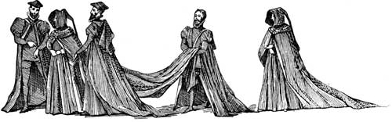
vi.20At the end of the fifteenth century, it was considered necessary in England to pass sumptuary mourning laws, owing to the extravagance of the nobility in the superfluous usage of cloth and other items at funerals. Habits and liveries were limited to certain quantities. Planche tells us dukes and marquises were allowed sixteen yards for their gowns, sloppes (or mourning cassocks) and mantles; an earl, fourteen; a viscount, twelve; a baron, eight; a knight, six; and all inferior persons, two yards only; but an archbishop had the same privilege as a duke. Hoods were only permitted to those above the degree of esquire of the king's household.
vi.22Margaret, Countess of Richmond, the mother of King Henry VII., issued, in the eighth year of his reign, an ordinance for "the reformation of apparell for great estates of women in the tyme of mourninge." "They shall have their surcottes with a trayne before and another behynde, and their mantles with traynes. The queen is to wear a surcotte, with the traynes as aforesaid, and playne hoode, and a tippet at the hoode lying a good length upon the trayne of the mantell, being in breadth a nayle and an inche. After the first quarter of a year, the hood to be lined with black satin, or furred with ermine; and all ladies down to the degree of a baroness, are to wear similar mourninge, and to be barbed at the chin." The surcotte, with trayne, hood, barbe, and tippet, are visible in the sketch of a lady of the sixteenth century, taken from Pietro Vercellio's famous work on costume. The gentleman's mourning of black cloth and fur, is reproduced from a contemporary MS.
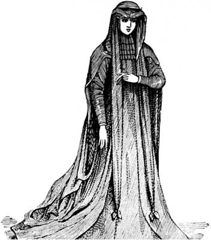
vi.24Among the obsolete funeral customs, may be mentioned the Death Crier, the lying-in-state of all classes, and the waxen effigies of those of royal rank. Before newspapers published obituary notices, it was customary for the Death Crier, armed with a bell and attired in a black livery, painted or embroidered with skulls and cross-bones, to announce to the townspeople, and inhabitants of surrounding villages, that another had gone over to the majority. This functionary was in the employ of the Corporation, or civil authorities, and on the death of a member of the Royal Family, he was usually accompanied by the Guild of Holy Souls, who walked in procession, bearing lighted tapers and other religious emblems. Lying-in-state usually lasted for three days, by which time the arrangements for a simple interment were completed, and the body was placed reverently in the ground. The obsequies of kings and queens, however, were carried over a protracted period, consequently a waxen figure was prepared, which was dressed in regal robes, and substituted for the body as soon as decomposition set in. This fashion was in vogue till the time of William and Mary, and in Westminster Abbey there is a collection of waxen effigies, which may be viewed by permission of the Dean. As likenesses they are interesting, and they are also useful as costume studies.
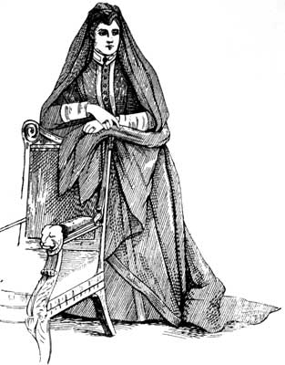
vi.26Of late years, in this country, mourning has been considerably modified, particularly for the male sex, who often content themselves with a black hat-band and another on the left sleeve of dark-coloured clothes. By Scotch law, whether a man dies solvent or insolvent, his widow may claim out of his estate, sufficient for mourning suitable to her rank, and the same privilege applies to each of her children, who are old enough to be present at their father's funeral. This right takes precedence over any debts the dead man may have contracted, and is a distinction not accorded to English, Welsh, or Irish widows.
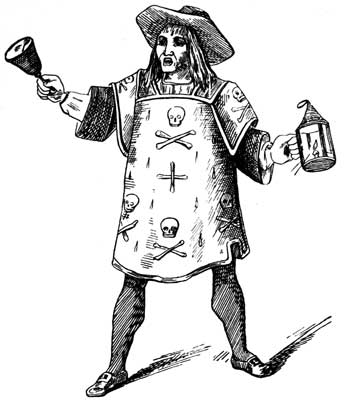
vi.28In most European countries black is the accepted colour for mourning; though in different parts of the globe white, yellow, red, brown, and even blue garments are prescribed by custom as the emblem of death.
vi.29These shades have been selected for the following reasons:--Black is symbolical of the gloom which surrounds one when those who are nearest and dearest are taken. Black and white express sorrow mixed with hope, and white alone the light which follows the night of mourning. Blue, the tint of the heavens, to which it is hoped the spirit forms have taken flight. Yellow is typical of the dead autumn leaf, and brown the earth to which the body returns. Violet, a royal colour, is generally used for the mourning of kings and high dignitaries of the Church. Scarlet is also used for royal mourning occasionally.[A]
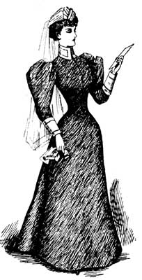
vi.31[Footnote A: For permission to reproduce some of the drawings from Davey's "History of Mourning," I am indebted to Messrs. Jay, Regent Street, London.]